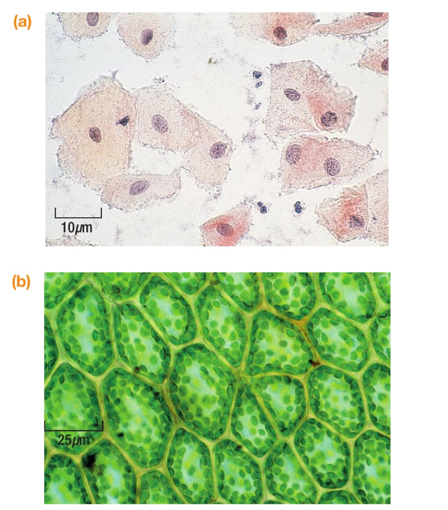

Year 7 Science · Topics 1–2
Cells and living things
Decide what makes something living, compare plant and animal cells, explain how specialised cells suit their jobs, and use cell structures as evidence.

Lessons
Lesson 01
Lesson 02
Lesson 03
Lesson 04
What makes something living?
Use the seven life processes as evidence, and judge what one observation can’t prove.
Open lesson
How do plant and animal cells compare?
Explore 3D animal and plant cells, then classify cells using the structures you can see.
Open lesson
How does a cell’s structure help its job?
3D root hair, palisade and ciliated cells: feature → effect → job.
Open lesson
What do cell structures do?
Fix common mix-ups, retry with new cells and identify the mystery cell Z.
Open lesson
Record your work in your book. Start on your table’s colour route and move up when you meet its success criteria. Each lesson includes support, extension questions and model answers. Rotate the 3D cells by dragging or with the arrow keys.